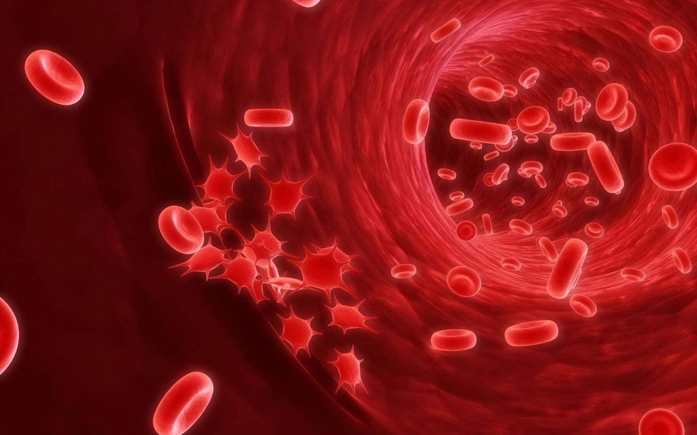

<section class="hero" id="hero">
    <div class="container">
        <div class="row">

            <div class="col-12">
                <div id="myCarousel" class="carousel slide carousel-fade" data-bs-ride="carousel">
                    <div class="carousel-inner">
                        <div class="carousel-item active">
                            
                        </div>

                        <div class="carousel-item">
                            
                        </div>

                        <div class="carousel-item">
                            
                        </div>
                    </div>
                </div>

                <div class="heroText d-flex flex-column justify-content-center">

                    <h1 class="mt-auto mb-2">
                        BloodStyx, combine
                        <div class="animated-info">
                            <span class="animated-item">fiabilité</span>
                            <span class="animated-item">sécurité</span>
                            <span class="animated-item">utilité</span>
                        </div>
                    </h1>

                    <p class="mb-4">BloodStyx est le système digital proposé pour fournir un moyen de faciliter l’interconnexion entre les donneurs, les patients, les banques de sang, principalement le CNTS. Sa principale contribution est de rendre plus efficace la surveillance des stocks de sang, la gestion des informations des donneurs, le suivi de don dans le pays, la sensibilisation de la population, la gestion des urgences… Le système comprend un ensemble de fonctionnalités spécifique à chaque acteur et exécutable dans une application mobile ou web.</p>

                    <div class="heroLinks d-flex flex-wrap align-items-center">
                        <a class="custom-link me-4" href="#about" data-hover="Learn More">contactez-nous</a>

                        <p class="contact-phone mb-0"><i class="bi-phone"></i>lcheikh@ept.sn</p>
                    </div>
                </div>
            </div>

        </div>
    </div>
</section>